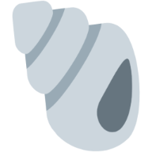

Please rotate your device to landscape to enjoy better experience.
Exploring SPIN
Sparsifying and Integrating Internal Neurons in Large Language Models for Text Classification
Difan Jiao, Yilun Liu, Zhenwei Tang, Daniel Matter, Jürgen Pfeffer, Ashton Anderson